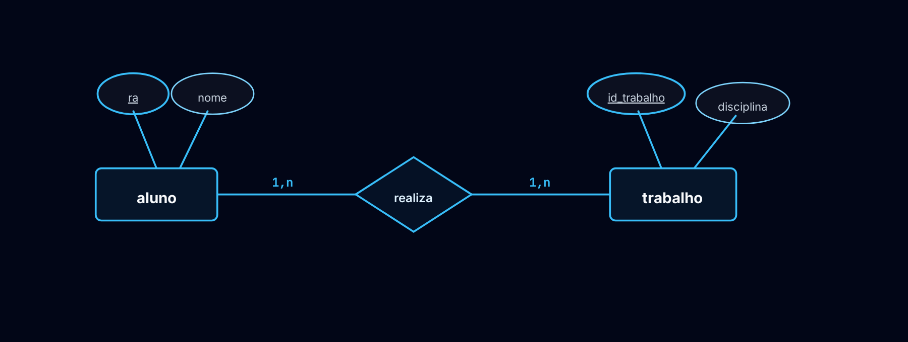
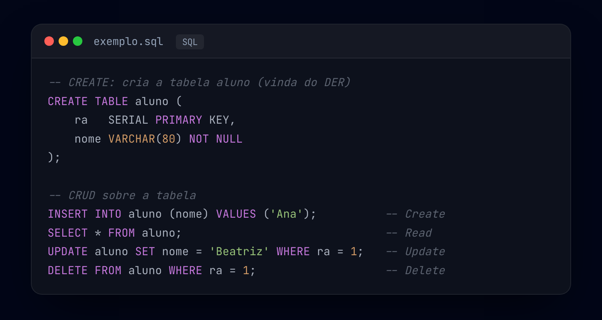

O Banco de Dados armazena, gerencia e recupera informações de forma eficiente. Antes de criá-lo, fazemos a modelagem com o DER (Diagrama Entidade-Relacionamento), que representa visualmente as entidades, seus atributos e os relacionamentos — planejando a estrutura antes da implementação (veja o exemplo abaixo).
Indica se uma entidade é obrigada ou não a participar de um relacionamento.
Ocorre quando uma entidade genérica é dividida em entidades mais específicas (subtipos), representando características particulares de cada categoria.
📐 Um DER bem elaborado reduz erros no desenvolvimento, facilita a implementação e torna a manutenção mais simples — pois traduz regras do mundo real que o sistema precisa respeitar.


CREATE TABLE da entidade aluno e o
CRUD em SQL — Create (INSERT), Read (SELECT),
Update (UPDATE) e Delete (DELETE).